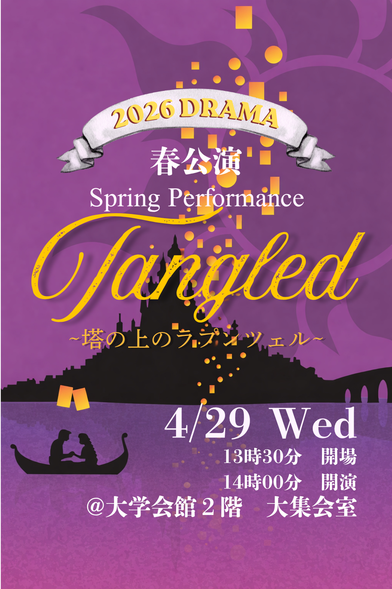
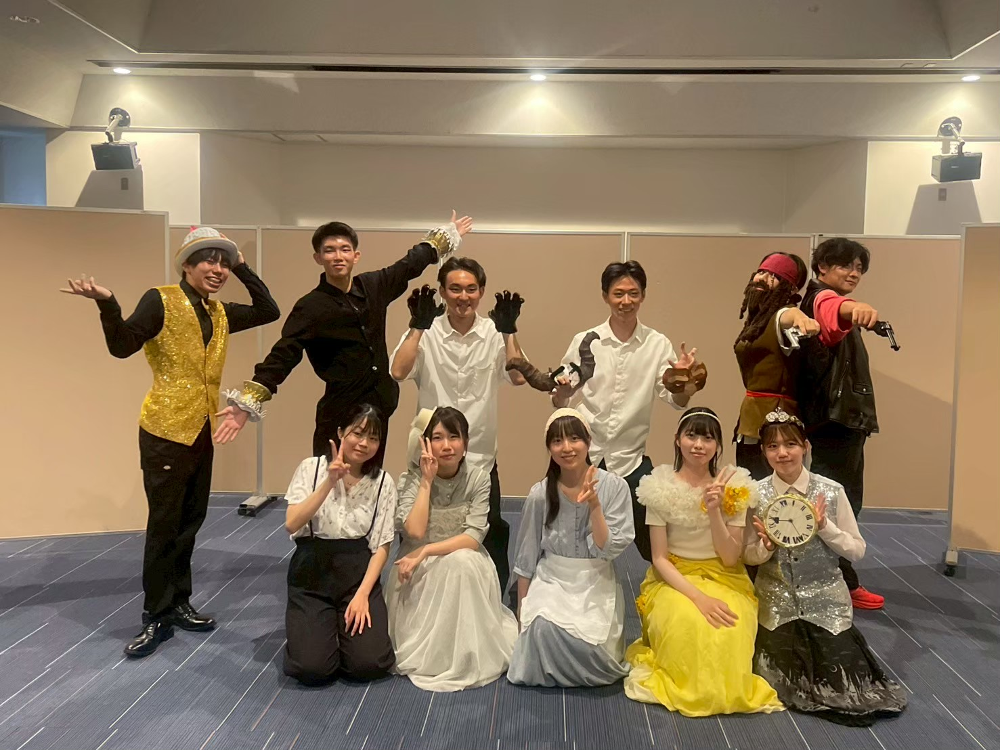

1年で2回、舞台の真ん中へ
7月のリメコンで初舞台、春には先輩の公演を間近で体感。入学して半年で「演者」になれるサークルは、広島大学でここだけ。
広島大学 English Speaking Society
英語で、歌って、踊って、泣いて、笑う。
34人の仲間とつくる、一生忘れられない舞台。
1年生だけで作る初舞台。春公演 Tangled のリメイク公演です。入場無料・予約不要。


2026 DRAMA リメコン — 新入生の初舞台公演
塔の上のラプンツェル（春公演リメイク）
春公演で上演した Tangled を、1年生だけで再び舞台にのせます。 入部後最初の公演——リメコン。英語ミュージカルの舞台デビューは、ここから始まります。
広島大学 ESS（English Speaking Society）ドラマセクションは、英語で演劇・ミュージカルを上演する大学サークルです。 キャスト（役者）とスタッフ（音響・照明・ディレクターなど）が協力し、本格的な舞台を作り上げます。
英語が苦手でも心配なし。部員のほとんどが英語が苦手で演劇初心者です。 練習は基本日本語で行われ、先輩が丁寧にサポートします。 表に立ちたくない人も、裏方スタッフとして活躍できます。
ブロードウェイ作品を英語のまま上演。歌・ダンス・演技のすべてが英語劇ならではの体験に。
春公演・リメコン・本公演の3本立て。1年生のうちに2回舞台に立てるのがESSドラマの魅力です。
毎週3回の練習に全部参加しなくてOK。週1・2で通う先輩も多数。バイトや他サークルとの両立も可能です。
メンバー紹介ページを見る →
「英語ができない」「演劇経験がない」——それ、むしろ当たり前。だからこそ、ここでの経験は特別です。
7月のリメコンで初舞台、春には先輩の公演を間近で体感。入学して半年で「演者」になれるサークルは、広島大学でここだけ。
練習は日本語。台本を読みながら、少しずつ英語が口から出るようになる。完璧じゃなくていい。伝われば、それが英語劇。
キャストだけじゃない。音響・照明・演出・衣装——舞台を支えるスタッフも公演の主役。やりたいこと、必ず見つかります。
ドラマ旅行、川そうめん、合宿、ハロウィン。舞台の前後も含めて、34人の時間がずっと続いていく。
練習場所：総合科学部棟、大学会館 など
※ 毎週3回すべての参加は不要です。週1〜2回で通うメンバーも多数います。
台本作成や演出の構想は、各公演の練習開始の約4〜6か月前から始まります。
新入生にドラマの魅力を伝える場。2年生にとっては自分の進化を実感できる公演です。1年生は観客として先輩の舞台を楽しみ、次のリメコンに向けて刺激を受けます。
新入生の初舞台公演
1年生だけで作り上げる初舞台。春公演のリメイク（リメコン）として、入部して最初に経験する公演です。ESSに入って半年で、いきなり英語の舞台に立てます。
3年生の集大成であり、一年間で最も大規模な公演。全学年が一丸となって作り上げる、ESSドラマのメインイベントです。
美女と野獣
愛と美しさの本質を問う、不朽のディズニーミュージカル。英語で紡ぐロマンティックな物語。
マチルダ
読書好きの少女マチルダが繰り広げる、勇気と希望に満ちた冒険。ロアルド・ダールの名作を英語で。
塔の上のラプンツェル
2026年4月29日（水）14:00開演。2・3年生による春公演。
塔の上のラプンツェル（リメイク）
2026年7月20日（月）14:00開演。1年生の初舞台公演。詳細は上記「最新公演」をご覧ください。
公演の舞台裏からホール練、仲間との日常まで。ESSドラマセクションの「今」がここにあります。
実際に活動している先輩・後輩のリアルな感想です。
「英語が苦手なのに、リメコンで初めてセリフを言ったとき、手が震えた。でもカーテンコールで拍手をもらった瞬間、全部報われた。」
「表に立つのが怖くてスタッフから入った。でも本番当日、自分が作った音響で舞台が動くのを見たとき、キャスト以上に泣きそうになった。」
「週1回しか来られないけど、全然浮いている感じはない。ESSに入って一番変わったのは、英語力より『仲間』。」
大丈夫です。部員のほとんどが英語が苦手で演劇初心者です。練習は基本日本語で行い、先輩がサポートします。
もちろんOKです。歌やダンスが得意でないメンバーも多数います。裏方スタッフ（音響・照明・ディレクターなど）として活躍する選択肢もあります。
いいえ。週1〜2回で通う先輩も多数います。自分のペースで参加できます。
可能です。兼サーもOK。多くのメンバーがバイトや他の活動と両立しています。
1年生だけで行う初舞台公演です。春公演のリメイク（リメコン）として、入部後最初に経験する舞台になります。
広島大学の学生・院生であれば入会できます。会費は1年目3,000円、2年目以降5,000円です。ドラマセクションは本公演の活動費が別途必要になります（金額は年によって異なります）。
新歓期間：4月3日 〜 5月17日
キャスト・スタッフともに募集中です。見学・体験にも気軽にお越しください。 英語や演劇の経験がなくても大丈夫。まずはお気軽にご連絡ください。